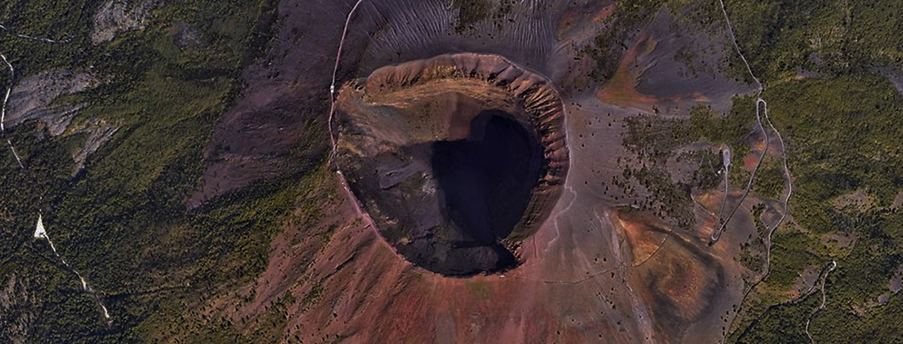
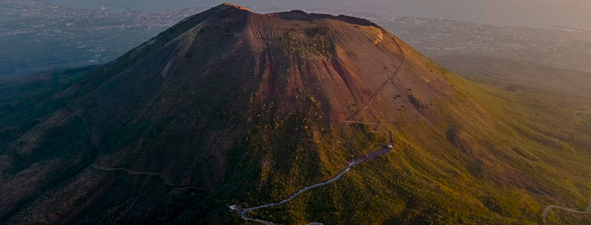
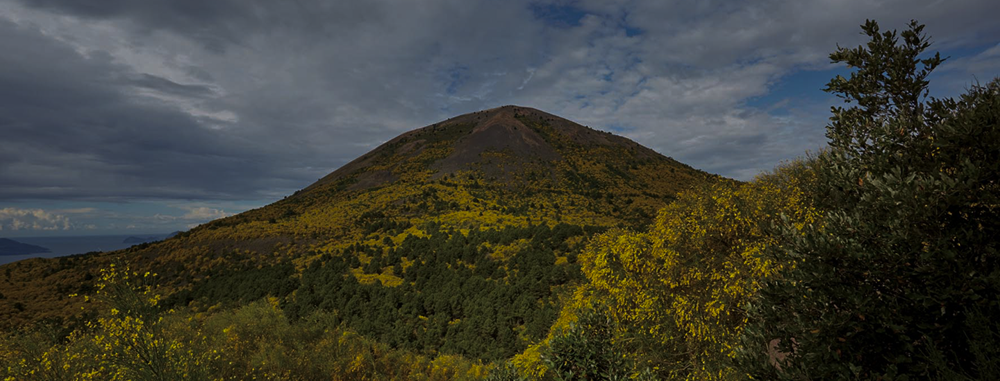
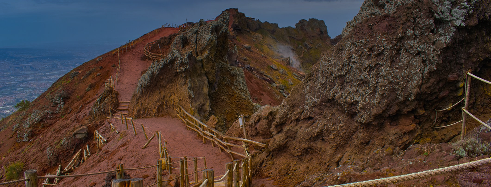

Parco Nazionale
del Vesuvio
"Scopri il simbolo indiscusso del Golfo di Napoli: un vulcano leggendario che domina
storia e panorama."
Il Parco Nazionale del Vesuvio circonda uno dei vulcani più famosi al mondo, il Vesuvio, che si erge
maestoso sul Golfo di Napoli.
La sua importanza storica, geologica e culturale è innegabile: la violenta eruzione del 79 d.C. che
distrusse Pompei ed Ercolano rimane scolpita nella memoria collettiva, e ancora oggi il Vesuvio rappresenta
un richiamo per ricercatori, turisti e abitanti locali.
Istituito nel 1995, il parco protegge non solo il cono vulcanico, ma anche un territorio di grande ricchezza
paesaggistica, dove si alternano boschi, colate laviche antiche, vigneti rigogliosi e insediamenti rurali.
L’obiettivo principale è salvaguardare questo ambiente unico, in cui il clima mediterraneo incontra la forza
primordiale della terra, creando un ecosistema dinamico e vario.


Il cuore del Parco è il Cratere del Vesuvio, che può essere raggiunto tramite un percorso panoramico
culminante in un’area di osservazione posta a circa 1.200 metri di altitudine.
Da lassù, si gode di una vista incomparabile sul Golfo di Napoli, con le isole di Capri, Ischia e Procida
all’orizzonte.
A poca distanza si trova la Valle dell’Inferno, un itinerario affascinante che attraversa boschi di lecci e
antiche colate laviche, mettendo in evidenza la potenza delle eruzioni passate.
Sono meritevoli di visita anche le Ville Vesuviane, costruite nel Settecento lungo il celebre Miglio d’Oro,
testimonianza del periodo in cui la nobiltà napoletana sceglieva le pendici del Vesuvio come luogo di
villeggiatura.
Per chi è interessato all’archeologia, i siti di Pompei, Ercolano e Oplonti si trovano appena fuori i
confini amministrativi del parco, ma rappresentano tappe imprescindibili per chi desidera comprendere la
storia di questo territorio.

Attività specifiche
Il Parco Nazionale del Vesuvio offre una rete di sentieri ben strutturati, suddivisi in base a livello di
difficoltà e tematica.
Da itinerari brevi per famiglie a percorsi più impegnativi per escursionisti esperti, vi è la possibilità di
esplorare boschi di pini e ginestre, sfiorare le colate laviche pietrificate e incontrare segnali della più
recente attività vulcanica.
Alcune associazioni organizzano visite guidate con geologi che illustrano le particolarità del suolo e gli
strumenti di monitoraggio sismico e vulcanologico.
Altra esperienza consigliata è la degustazione dei prodotti tipici del territorio: il famoso vino Lacryma
Christi del Vesuvio, ottenuto da uve coltivate su terreni vulcanici ricchi di minerali, oppure i pomodorini
del piennolo, apprezzati per il loro sapore intenso.
Non mancano piccole aziende agricole che propongono tour e assaggi, per unire l’aspetto naturalistico a
quello gastronomico.

Flora e fauna
La vegetazione vesuviana è contraddistinta dalla macchia mediterranea, con ginestre che colorano di giallo
le pendici durante la fioritura primaverile.
Oltre alle ginestre, sono presenti pini, lecci, roverelle e betulle, introdotte in alcune aree per favorire
il rimboschimento.
L’alternanza di eruzioni ha modellato il territorio in modo discontinuo, creando habitat differenti in pochi
chilometri.
La fauna include volpi, conigli selvatici, ricci e diversi tipi di rettili.
È possibile avvistare poiane, falchi pellegrini e nibbi reali, mentre i boschi ospitano picchi, tordi e
ghiandaie.
Le attività di conservazione del parco mirano a ripristinare e mantenere la biodiversità endemica, sebbene
la vicinanza di aree urbane e l’intensa frequentazione turistica richiedano un costante monitoraggio.

Informazioni utili
Per visitare il Cratere è necessario acquistare un biglietto d’ingresso, con possibilità di usufruire di
visite guidate.
È consigliabile prenotare online, specialmente durante l’alta stagione e nei weekend, per evitare lunghe
code.
Il clima può variare sensibilmente durante la giornata: d’estate fa caldo alla base del vulcano, ma è sempre
meglio portare una giacca per il vento in quota.
D’inverno, alcune giornate possono essere piovose e le temperature più basse, pertanto occorre abbigliamento
adeguato.
Il parco è accessibile da più punti, ma i più comuni sono Ercolano e Torre del Greco: da qui partono bus
navetta che portano i visitatori fino alle quote più alte.
Per chi utilizza l’auto, è necessario fare attenzione alle restrizioni di parcheggio lungo la strada che
sale al Vesuvio.
Sul piano della sicurezza, è bene ricordare che il vulcano è attivo, seppure in stato di quiescenza, quindi
si raccomanda di seguire le indicazioni delle autorità competenti e di non abbandonare i sentieri segnalati.
La fruizione responsabile del Parco Nazionale del Vesuvio permette di coniugare la scoperta di un patrimonio
naturalistico e culturale di enorme valore con l’emozione di salire su uno dei vulcani più celebri al mondo,
scenario di leggende, opere letterarie e studi scientifici fin dall’antichità.